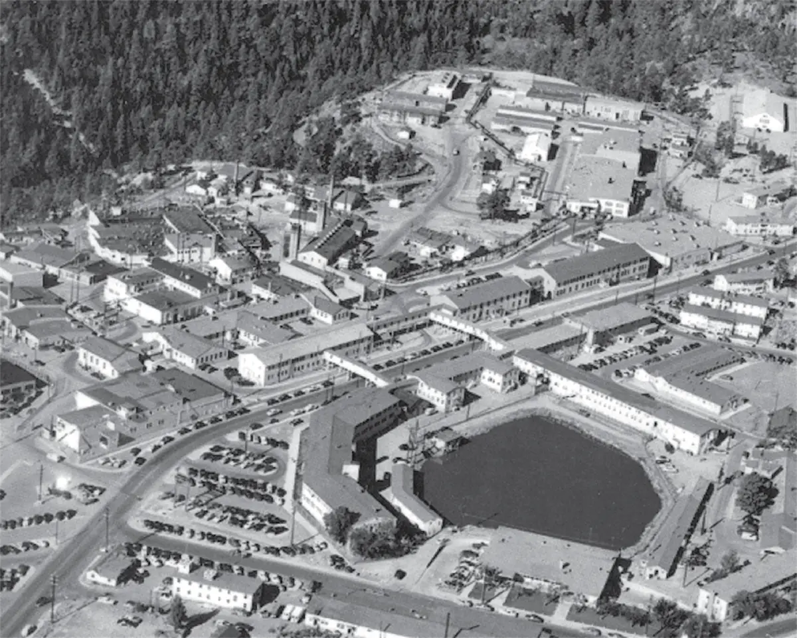
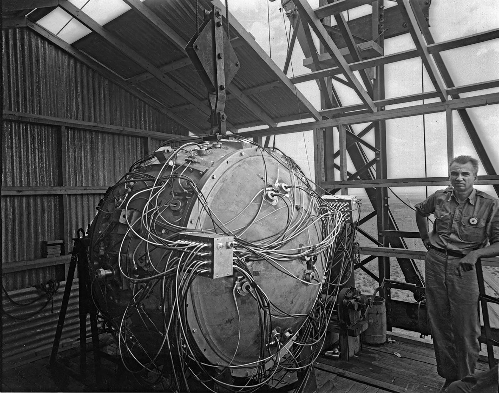
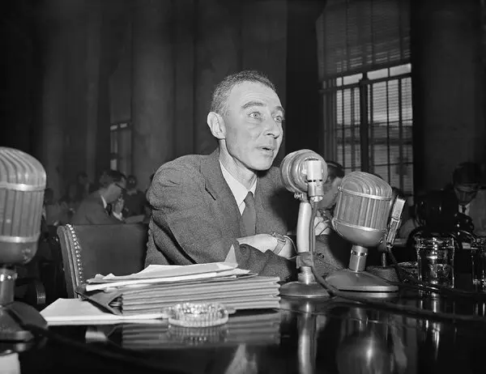
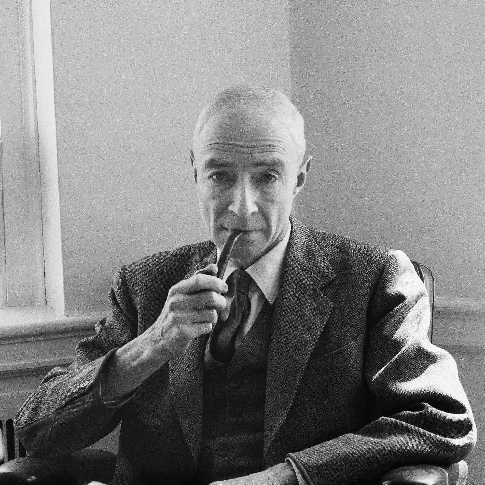

1942 - 1946
El Proyecto Manhattan
Un proyecto de investigación y desarrollo ultrasecreto llevado a cabo durante la Segunda Guerra Mundial. Ante el temor de que la Alemania nazi estuviera desarrollando armas nucleares, el gobierno de EE.UU. reunió a las mentes más brillantes de la época.
J. Robert Oppenheimer fue designado como director del Laboratorio de Los Álamos, una instalación construida desde cero en el aislado desierto de Nuevo México, donde se diseñaron los mecanismos de detonación.

Vista aérea del complejo secreto en Los Álamos, Nuevo México.
16 de Julio de 1945
La Prueba Trinity
A las 5:29 a.m., en el desierto de Jornada del Muerto, se detonó "The Gadget", marcando la primera explosión nuclear de la historia. La bola de fuego iluminó el cielo con una fuerza equivalente a 21 kilotones de TNT.
Al presenciar el devastador hongo nuclear, Oppenheimer recordó un verso de las escrituras hindúes, el Bhagavad Gita: "Ahora me he convertido en la Muerte, el destructor de mundos."

La Prueba Trinity en 1945.
6 y 9 de Agosto de 1945
Hiroshima y Nagasaki
Apenas semanas después de Trinity, Estados Unidos lanzó las bombas atómicas "Little Boy" sobre Hiroshima y "Fat Man" sobre Nagasaki. Las explosiones arrasaron las ciudades instantáneamente, causando la muerte de más de 200,000 personas, en su mayoría civiles.
Japón se rindió poco después, poniendo fin a la Segunda Guerra Mundial. Sin embargo, la magnitud de la destrucción dejó a Oppenheimer profundamente perturbado, llevándolo a confrontar al presidente Harry S. Truman alegando que sentía "tener sangre en las manos".

Hiroshima y Nagasaki tras las explosiones nucleares.
1954
La Caída de un Héroe
Durante el apogeo de la Guerra Fría y la era McCarthy, Oppenheimer se opuso firmemente al desarrollo de la Bomba de Hidrógeno (una "súper bomba" impulsada por Edward Teller), abogando por el control internacional de armas.
Sus enemigos políticos, liderados por Lewis Strauss, utilizaron sus antiguos vínculos con miembros del Partido Comunista para orquestar una audiencia de seguridad amañada. Oppenheimer fue humillado públicamente y se le revocó su autorización de seguridad, terminando su influencia en el gobierno.

La audiencia de seguridad que llevó a la pérdida de la autorización de Oppenheimer.
18 de Febrero de 1967
El Final de Oppenheimer
J. Robert Oppenheimer continuó su vida académica como director del Instituto de Estudios Avanzados de Princeton, pero nunca recuperó su antigua posición política. Fumador empedernido durante toda su vida, falleció de cáncer de garganta a los 62 años.

J. Robert Oppenheimer en el Instituto de Estudios Avanzados de Princeton.
Diciembre de 2022
La Exoneración Histórica
Casi 70 años después de las audiencias, y meses antes del estreno de la película de Christopher Nolan, el Departamento de Energía de Estados Unidos anuló formalmente la decisión de 1954.
El gobierno admitió oficialmente que el proceso contra el físico fue "profundamente defectuoso y violó sus propias regulaciones", restaurando de forma póstuma la lealtad y el honor de J. Robert Oppenheimer.
La Actualidad
Hiroshima y Nagasaki Hoy
A pesar de la devastación nuclear que definió su pasado, tanto Hiroshima como Nagasaki son hoy prósperas metrópolis tecnológicas y culturales. Han resurgido de las cenizas para convertirse en los principales faros de paz del mundo.
El resurgimiento de Hiroshima y Nagasaki como símbolos globales de paz.